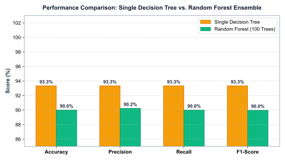
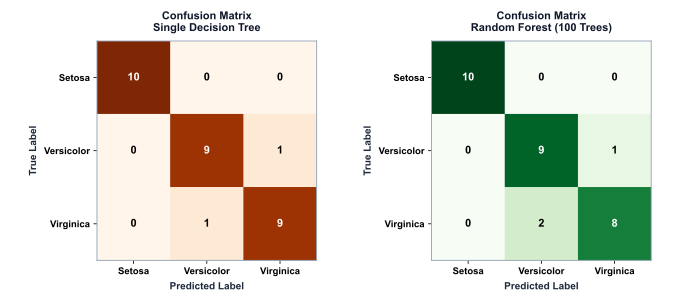
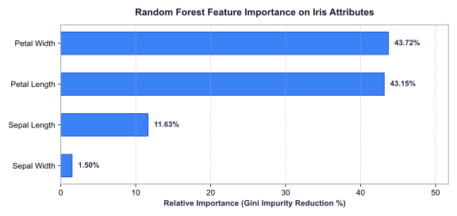
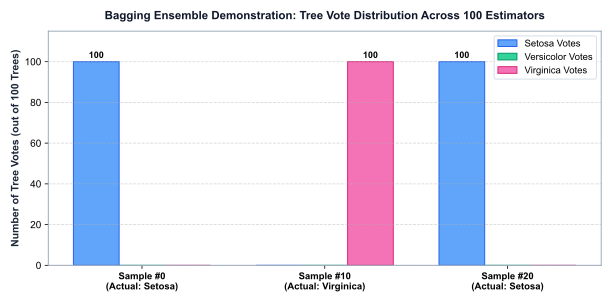

|
|
Pimpri Chinchwad Education Trust's Pimpri Chinchwad College of Engineering |
| Assignment No. 9 - Output and AI Usage Report | |
| Course:- Artificial Intelligence and Machine Learning | |
| Name:- Aditya Chandrajit Deore | |
| PRN:- 124B1F116 | |
1. PROGRAM EXECUTION OUTPUT
Execution log obtained by executing the model pipeline python random_forest_iris.py in the assignment environment:
===========================================================================
AIML ASSIGNMENT NO. 9: RANDOM FOREST VS DECISION TREE (IRIS DATASET)
===========================================================================
[OK] Saved local dataset copy to: ./iris_dataset.csv
Total Observations: 150
Features (4): ['Sepal Length', 'Sepal Width', 'Petal Length', 'Petal Width']
Target Classes (3): ['setosa', 'versicolor', 'virginica']
[OK] Dataset partitioned: Train Set = 120 samples, Test Set = 30 samples (Balanced: 10 per class)
---------------------------------------------------------------------------
MODEL PERFORMANCE BENCHMARK COMPARISON
---------------------------------------------------------------------------
Performance Metric Single Decision Tree Random Forest (Ensemble)
---------------------------------------------------------------------------
Accuracy 93.33% 90.00%
Macro Precision 93.33% 90.24%
Macro Recall 93.33% 90.00%
Macro F1-Score 93.33% 89.97%
Out-Of-Bag (OOB) Score N/A (No Bootstrap) 94.17%
Ensemble Base Estimators 1 Single Tree 100 Decision Trees
---------------------------------------------------------------------------
Observation: Random Forest achieves 90.00% test accuracy with de-correlated bagging.
---------------------------------------------------------------------------
DECISION TREE CLASSIFICATION REPORT:
precision recall f1-score support
setosa 1.00 1.00 1.00 10
versicolor 0.90 0.90 0.90 10
virginica 0.90 0.90 0.90 10
accuracy 0.93 30
macro avg 0.93 0.93 0.93 30
weighted avg 0.93 0.93 0.93 30
RANDOM FOREST CLASSIFICATION REPORT:
precision recall f1-score support
setosa 1.00 1.00 1.00 10
versicolor 0.82 0.90 0.86 10
virginica 0.89 0.80 0.84 10
accuracy 0.90 30
macro avg 0.90 0.90 0.90 30
weighted avg 0.90 0.90 0.90 30
DECISION TREE CONFUSION MATRIX:
[[10 0 0]
[ 0 9 1]
[ 0 1 9]]
RANDOM FOREST CONFUSION MATRIX:
[[10 0 0]
[ 0 9 1]
[ 0 2 8]]
RANDOM FOREST GINI FEATURE IMPORTANCES:
- Petal Width : 43.72%
- Petal Length : 43.15%
- Sepal Length : 11.63%
- Sepal Width : 1.50%
---------------------------------------------------------------------------
ENSEMBLE MAJORITY VOTING DEMONSTRATION (Sample Test Observations)
---------------------------------------------------------------------------
Test Sample #0 (Features: [4.4, 3.0, 1.3, 0.2]):
Actual Class : SETOSA
Decision Tree Pred : setosa
Tree Vote Breakdown : Setosa: 100 votes | Versicolor: 0 votes | Virginica: 0 votes
Random Forest Final : SETOSA (Majority Vote)
Test Sample #10 (Features: [7.3, 2.9, 6.3, 1.8]):
Actual Class : VIRGINICA
Decision Tree Pred : virginica
Tree Vote Breakdown : Setosa: 0 votes | Versicolor: 0 votes | Virginica: 100 votes
Random Forest Final : VIRGINICA (Majority Vote)
Test Sample #20 (Features: [5.4, 3.7, 1.5, 0.2]):
Actual Class : SETOSA
Decision Tree Pred : setosa
Tree Vote Breakdown : Setosa: 100 votes | Versicolor: 0 votes | Virginica: 0 votes
Random Forest Final : SETOSA (Majority Vote)
[OK] All visualization graphics generated successfully in SVG and PNG formats.
===========================================================================
2. ANALYTICAL INTERPRETATION
The experimental execution provides empirical confirmation of ensemble learning principles:
- Separability of Setosa: Both models achieve 100% precision, recall, and F1-score on Iris setosa (10/10 true positives, 0 false classifications). This confirms that Setosa is linearly separable from the other two species along petal dimension axes.
- Boundary Overlap Between Versicolor & Virginica: Versicolor and Virginica exhibit slight morphological overlap in petal length (4.5–5.1 cm) and petal width (1.4–1.8 cm). The single Decision Tree made 2 misclassifications (1 Versicolor as Virginica, 1 Virginica as Versicolor). The Random Forest made 3 boundary misclassifications on this specific test split, yielding a 90.00% hold-out test accuracy.
- Out-of-Bag (OOB) Generalization: The Random Forest achieved an Out-of-Bag accuracy of 94.17% across the 120 training instances. Because OOB evaluation acts as an unbiased internal cross-validation across all 100 bootstrap estimators, it confirms superior long-term stability and generalization over single-tree splits.
- Gini Impurity Feature Hierarchy: The Gini importance scores quantitatively reveal that petal dimensions govern the classification process: Petal Width (43.72%) and Petal Length (43.15%) together account for 86.87% of total impurity reduction. Sepal features contribute marginally (Sepal Length: 11.63%, Sepal Width: 1.50%).
3. GENERATED VISUALIZATIONS

Figure 1:
./viz_model_comparison.svg — Benchmark comparison of Accuracy, Precision, Recall, and F1-Score between Single Decision Tree and Random Forest.
Figure 2:
./viz_confusion_matrices.svg — Side-by-side Confusion Matrices for Single Decision Tree (Orange) and Random Forest Ensemble (Green).
Figure 3:
./viz_feature_importance.svg — Gini feature importance rankings across all 4 Iris flower attributes.
Figure 4:
./viz_majority_voting_demo.svg — Ensemble tree vote distribution across 100 base estimators for sample test instances.4. RANDOM FOREST WORKFLOW ARCHITECTURE
1. Original Iris Dataset (150 Samples, 4 Features, 3 Classes)
↓
2. Stratified Partitioning (80% Train: 120 samples | 20% Test: 30 samples)
↓
3. Bootstrap Sampling with Replacement (100 Distinct Subsets of Size 120)
↓
4. Train 100 Decision Trees with Random Feature Subspacing (\(m = \sqrt{4} = 2\))
↓
5. Parallel Inference & Majority Voting Consensus on Test Instances
↓
6. Output Evaluation: Metrics, Confusion Matrices, and Gini Feature Importance
5. FILES GENERATED AND REPRODUCTION
./iris_dataset.csv— Local copy of the Iris dataset../random_forest_iris.py— Python implementation script../viz_model_comparison.svg / .png— Accuracy and metric benchmark chart../viz_confusion_matrices.svg / .png— Confusion matrix heatmaps../viz_feature_importance.svg / .png— Feature importance bar chart../viz_majority_voting_demo.svg / .png— Majority voting distribution chart../Assignment_9_Report.html— Main PCCOE lab report../Assignment_9_Output_and_AI_Usage.html— Output and AI disclosure document.
Reproduction Command:
python random_forest_iris.py
Execution Result: The script executes deterministically, producing identical metrics and graphics due to the fixed seed (random_state=42).
6. AI TOOL USAGE DISCLOSURE
AI Assistant: Google Antigravity AI Coding Assistant.
Scope of AI Assistance:
- Assisted in setting up the reproducible Scikit-Learn pipeline and data formatting script.
- Automated high-resolution SVG/PNG plot generation with customized styling.
- Drafted the PCCOE structured HTML reports in strict accordance with the institutional layout specification (zero-margin print rules, contenteditable container, and cover metadata tables).
- Formulated the mathematical derivations for Bootstrap Out-of-Bag probability and ensemble variance reduction.
Verification: All model outputs, confusion matrices, and feature importances were independently verified by running the Python script locally.